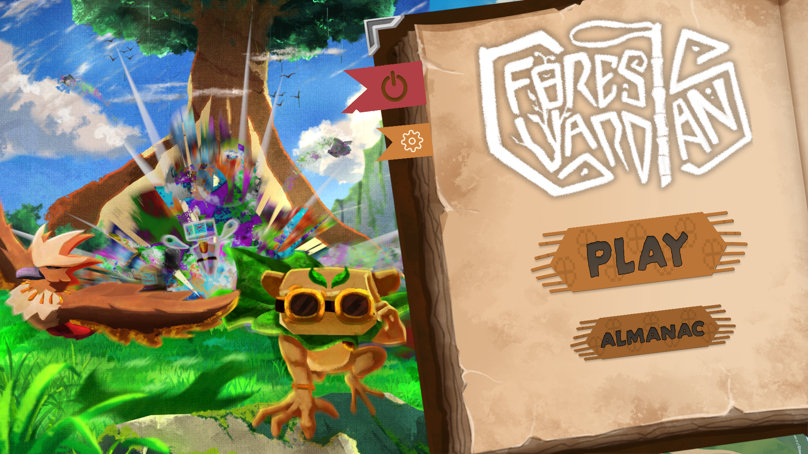

ACADEMIC CAPSTONEFOR TURNOVER
Forest
Guardians.
Lead Developer, Game Designer & 2D Artist · Academic Capstone
A 3D action-defense game promoting Philippine biodiversity. I work on the gameplay systems, enemy waves, balancing, and general game design.
Currently polishing for turnover as an academic requirement.
Visit the game website